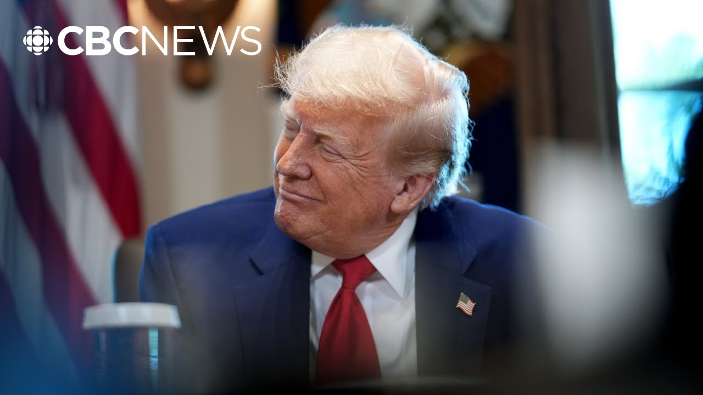

来B站一起耍【Global每日英语简报】
【特朗普称“绅士”卡尼将于下周内访问白宫】
Summary: The US president expects Canadian Prime Minister Mark Carney to visit the White House soon, praising him as a "nice gentleman" while expressing reservations about Conservative leader Pierre Palev during a post-cabinet press interaction.
摘要： 美国总统期待加拿大总理马克·卡尼即将访问白宫，称赞其为"绅士"，同时在内阁会议后的记者互动中对保守党领袖皮埃尔·帕列夫表示保留态度。

⏱️ Estimated Reading Time: 5 min
The US president says he's expecting a visit from Prime Minister Mark Carney in a matter of days.
美国总统表示预计马克·卡尼总理将在几天内到访。
Donald Trump made the comments while taking reporter questions.
唐纳德·特朗普在回答记者提问时发表了这些评论。
Trump also offered some thoughts on Conservative leader Pierre Palev.
特朗普还就保守党领袖皮埃尔·帕列夫发表了一些看法。
The CBC's Sasha Petraik has the latest from Washington.
加拿大广播公司的萨沙·佩特拉伊克从华盛顿发回最新报道。
This was after a cabinet meeting at the White House.
这是在白宫内阁会议之后发生的。
Trump was asked about Canada's election and uh what did he think of it?
特朗普被问及对加拿大选举的看法。
Well, his takeaway was that I think we're going to have a great relationship.
他的结论是"我认为我们将建立良好关系"。
Uh he also talked about uh uh the uh the co a conversation that he had with uh with Prime Minister Mark Carney uh on the phone yesterday.
他还谈及昨天与马克·卡尼总理的电话交谈。
he said and uh and uh gave quite a positive uh uh thumbs up if you like to uh to to what he thinks of him and uh and also some comments about uh or some suggestions about what he thinks about uh opposition leader uh Pierre Piev.
他表示对卡尼持积极肯定态度，同时也对反对党领袖皮埃尔·皮耶夫发表了评论。
This is what Trump had to say.
以下是特朗普的原话。
Well, I think we're going to have a great relationship.
"我认为我们将建立良好关系"。
He called me up yesterday.
"他昨天给我打了电话"。
He said, "Let's make a deal."
他说"我们来做个交易"。
You know, he he had he was running for office.
"你知道，他当时正在竞选"。
They were both They both hated Trump and it was the one that hated Trump.
"他们都讨厌特朗普，但其中一方更甚"。
I think the least that won.
"我认为反感程度较轻的一方获胜了"。
I actually think the conservative hated me much more than the uh than the so-called liberal.
"实际上我认为保守派比所谓自由派更讨厌我"。
He's pretty liberal guy.
"他是个相当自由派的人"。
But no, I spoke to him yesterday.
"但昨天我和他通话了"。
Couldn't have been nicer and I congratulated him.
"他非常友善，我向他表示了祝贺"。
You know, they it was a very mixed uh signal because it's almost even which makes it very complicated for the country.
"这次选举结果非常胶着，给国家带来复杂局面"。
It's a pretty tight race, but he's a very nice gentleman and we uh he's going to come to the White House very shortly, within the next week or less.
"选情非常激烈，但他是位绅士，下周内就会来白宫访问"。
So, we're expecting that in the next few days.
"我们预计这几天就会成行"。
Uh this uh this came as a little bit of a surprise, but uh it uh it works pretty much like everything else with Donald Trump here that uh um things seem to happen uh sort of off the cuff.
"这有些出人意料，但符合特朗普一贯的即兴风格"。
Andrew.
"安德鲁"。
Yeah.
"是的"。
And we're we're waiting for confirmation on it.
"我们正在等待官方确认"。
Exactly.
"确实如此"。
From the prime minister's office, of course, because we have heard from Mark Carney saying that it would happen, but it needs to happen in a spirit of respect.
"当然需要总理办公室确认，虽然卡尼表示会访问，但必须在相互尊重的前提下"。
Uh Trump uh seemed to suggest, as you said, that he preferred Carney to conservative leader Pierre Palev.
"如你所说，特朗普似乎更青睐卡尼而非保守党领袖帕列夫"。
So, what do we know about his views on the two leaders?
"那么他对两位领导人具体持何看法？"
Yeah, that's right.
"没错"。
Uh this is the second time uh that we've heard Donald Trump say that uh that that Mark Carney is a really nice guy and uh and and uh uh in a way shower him with uh with with very nice things more so than we've heard Donald Trump say about other people other leaders who have visited the White House and who he's spoken to.
"这是特朗普第二次盛赞马克·卡尼，其热情程度超过对其他到访白宫的领导人"。
So that was a little bit of a surprise.
"这有些令人意外"。
Perhaps before the election the the thought was that maybe he was saying those things uh in order to help Pierre Polev but uh now it's not so clear and in fact it's a little bit surprising that uh that for some reason Donald Trump thinks that Pv actually hates him more in the words of Trump.
"选前可能认为他是在帮帕列夫造势，但现在看来并非如此——更令人惊讶的是特朗普认为帕列夫更讨厌他"。
um surprising I say because uh there's no suggestion.
"之所以惊讶是因为毫无迹象表明"。
We're not aware that the two men have ever met or even spoken to one another.
"据我们所知两人从未谋面甚至交谈"。
So he's obviously uh uh taking this impression from uh from what he's seeing or what he is hearing uh from the campaign itself.
"显然他的这种印象来自竞选期间的所见所闻"。
But uh either way, he seems to think that uh that Carney is someone that he can do business with.
"但无论如何，他似乎认为卡尼是可以合作的对象"。
Uh he said that before, now he's saying it after the election.
"他选前就这么说，现在选举后再次强调"。
So, we'll see where that is going to end up and and whether in fact it uh it will lead to some kind of a breakthrough when the two men actually meet face to face.
"有待观察两人实际会面时能否取得突破"。
The CBC's Sasha Petra in Washington.
加拿大广播公司萨沙·佩特拉华盛顿报道。